| ||||||||||||||||||||||||||||||||||||||||||||||||||||
|
CARDIS '02 Paper
[CARDIS '02 Tech Program Index]
This paper addresses mobile code protection with
respect to potential integrity and confidentiality violations originating
from the untrusted runtime environment where the code execution takes place.
Both security properties are defined in a framework where code is modeled
using Boolean circuits. Two protection schemes are presented. The first
scheme addresses the protection of a function that is evaluated by an untrusted
environment and yields an encrypted result only meaningful for the party
providing the function. The second scheme addresses the protection of a piece of software executed by an untrusted environment.
It enforces the secure execution of a series of functions while allowing
interactions with the untrusted party. The latter technique relies on trusted
tamper-proof hardware with limited capability. Executing a small part of
the computations in the tamper-proof hardware extends its intrinsic security
to the overall environment.
1 IntroductionThe mobile code paradigm is becoming increasingly praised
for its flexibility in the management of remote computers and programmable
devices. Unsurprisingly, more flexibility leads to new challenging security
problems. Mobile code presents vulnerabilities unheard of in the traditional
programming world. On one hand, attacks may be performed by mobile programs
against a remote execution environment and its resources. On the other
hand, a mobile code may be subverted by a malicious remote execution environment.
The former issue has been widely addressed [25],
for instance through containment mechanisms like the sandbox, the applet-firewall,
etc., but few solutions deal with the latter.
This paper extends our work on the protection of mobile code [23], [24]. The problem addressed here is as follows: Alice (A) wants a piece of code to be executed on Bob's (B) workstation, the result of its execution being eventually returned to A. However, B cannot be trusted and might try to modify the execution of this program. In addition, in the context of mobile code, interacting with A during the program execution is not an option. In other words, the code sent by A must be executed autonomously by B who only provides additional input parameters. It is necessary to ensure that B cannot get information about the semantics of the code provided by A and that A can be assured, without performing the computation herself, that the execution has not been tampered with. This is different from volunteer computing scenarios [34]such as Seti@home where data to treat is provided by A. In this model, "integrity of execution" means that B cannot alter the execution of the program and surreptitiously modify its results. "Confidentiality of execution", sometimes termed "privacy of computation" although it bears no relationship with anonymity, aims at preventing the disclosure of program semantics. Integrity and confidentiality are tightly entangled in our proposal because of the cryptographic protection scheme used. However, confidentiality and integrity are independent properties and thus will be evaluated separately in each solution. The use of tamper-proof hardware (TPH) has long been the only solution for protecting the execution of critical programs from an untrusted party: the program is completely executed within the hardware that is trusted by the code owner. With the advent of mobile code, TPH has logically been advocated as the most obvious solution for protecting a program from its untrusted execution environment. [43] is a good example of this hardware-only trend. However, existing solutions based on tamper-proof hardware suffer from inherent limitations ranging from the cost and difficulty of retrofitting tamper-proof and powerful cryptographic boards on everybody's workstations to the lack of computing power in smart cards. Prompted by the limitation of TPH-based solutions, alternative approaches were brought up as application-specific solutions [10], solutions aimed at protecting specific classes of mathematical functions [33], [32], or even empirical and mathematically unfounded ones like obfuscation [16]. Our proposal also takes into account the inherent limitations of tamper-proof hardware. Mathematical functions, which can be represented by Boolean circuits, are a building block for programs. Section 2 presents a scheme ensuring a secure non-interactive evaluation of such functions. To this end, the circuit implementing the function is encrypted using a technique inspired by the McEliece public key scheme [28]. Based on this solution, Section 3 describes a scheme for the secure non-interactive evaluation of a piece of software consisting of the combination of several functions and of a control structure scheduling these functions. In this case, a Tamper-Proof Hardware acting on behalf of the party providing the mobile code is required. Executing a small part of the computations in the TPH extends the intrinsic security of the TPH to the overall environment. In Section 4, this solution is compared with similar approaches dealing with integrity or confidentiality of execution. 2 Protecting FunctionsAs a first step towards integrity and confidentiality
of execution, a solution for protecting mathematical functions is proposed.
This solution is inspired by the work of Sander and Tschudin [33],
[32],
who devised a function hiding scheme for non-interactive protocols (see
Section 4.1).
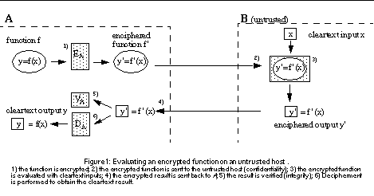
Figure 1 describes the main steps of the function protection process using this solution. Using EA, function f is encrypted by its originator A into a new function f'. The untrusted host B evaluates f' on the cleartext input x and gets y' as the encrypted result of this evaluation. Using the secret decryption algorithm DA, A can retrieve y that is the cleartext result of the original function f, based on the following property of the function hiding scheme: y = DA(y') = DA(f'(x)) = DA(EA(f(x))) = f(x). Moreover, an integrity verification algorithm VA is used by A to check the computation performed by B. 2.1 Computational ModelThis section defines the mechanisms required to ensure
integrity and confidentiality of execution in an untrusted environment.
Section 2.2 describes more precisely how those concepts are implemented
in our approach.
General OverviewSince fixed-length inputs and outputs are used, it is
possible to deal with functions using a Boolean circuit representation.
Let us represent the function f with a circuit called c (in the sequel
of this paper, circuit and function are largely used as equivalents). The
number of binary inputs (l) and outputs (k) will be defined according to
the possible input and output values of the function. X is the unrestricted
set of all possible inputs (e.g. {0,1}l ). Fl,k represent the family of
Boolean circuits with l inputs and k outputs (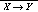
). Circuit 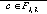 defines a relation
between input
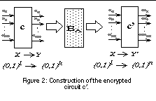
 and output 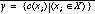
, 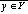 , 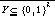
. The circuit c may also be seen as a set of k functions: 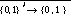
. Each of these functions is defined by a Boolean equation. The corresponding
k equations are the inputs to algorithm EA (Figure 2). The result is a
set of n Boolean equations that define a new Boolean circuit 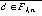
. The circuit c' defined by A is evaluated by B who provides input data
, but the encryption by EA prevents the disclosure of c to B. Look at Section
2.2 for details on the encryption mechanism EA. and output 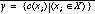
, 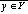 , 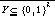
. The circuit c may also be seen as a set of k functions: 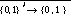
. Each of these functions is defined by a Boolean equation. The corresponding
k equations are the inputs to algorithm EA (Figure 2). The result is a
set of n Boolean equations that define a new Boolean circuit 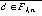
. The circuit c' defined by A is evaluated by B who provides input data
, but the encryption by EA prevents the disclosure of c to B. Look at Section
2.2 for details on the encryption mechanism EA.Confidentiality of ExecutionThe circuit c'=EA(c) preserves the confidentiality of
c if it is computationally infeasible to derive c from c'. A decryption
algorithm DA must be used in order to retrieve the desired cleartext result
y=c(x) from the obtained ciphertext result y'=c'(x). A polynomial time
decryption algorithm is necessary to remain realistic.
Integrity of ExecutionAlice receives a ciphertext result y' corresponding to
the evaluation of the encrypted circuit c' with Bob's cleartext inputs.
Alice should be able to retrieve from y' the cleartext result y corresponding
to the evaluation of the circuit c using the same input. VA has to define
a polynomial time verification of this result since for practical applications,
the circuit owner must be able to efficiently verify the result of the
circuit execution. The verifier concept is introduced to address the problem
of integrity of execution. The verifier shares some similarities with CS
Proofs [29] in that
there can exist invalid proofs but those should be hard to find. Basically,
the verifier concept relies on the difficulty of finding valid values (y')
that do not correspond to valid cleartext outputs (y). Using the terminology
of [9], Alice's
verifier VA checks that there exists an x such that y=c(x). It can be defined
as follows:
if 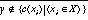 then 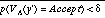 Even if the result is verified and cannot be forged randomly, a malicious remote host is able to identify possible outputs of a circuit for chosen inputs. Therefore, integrity of execution alone (i.e. without confidentiality of execution) does not prevent B from performing several executions of the circuit and selecting the best result. A scheme that ensures both integrity and confidentiality of execution is thus highly desirable. 2.2 Detailed Protection SchemeThis section presents our solution to encrypt functions.
A technique derived from the McEliece [28]
public key cryptosystem is used. Unlike the McEliece scheme that encrypts
data, our approach encrypts functions. Moreover, this asymmetric scheme
is used as a symmetric one by keeping both public and private keys secret.
As a result, part of the attacks possible against the McEliece cryptosystem
are not relevant in our scheme because attackers do not know the public
key.
Circuit EncryptionAll Boolean equations of the original plaintext circuit
c are encrypted using the McEliece technique
[28]
where data are replaced by equations c' = EA(c) :
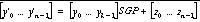
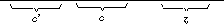 Boolean equations yi = fi(x0..xl-1) are multiplied by
the 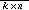 matrix SGP (for more details
on Boolean circuit encryption, look at Figure 3). G is a generating matrix
for a 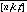 Goppa code C [27]
and t is the number of errors that the code is able to correct. P is a
random permutation matrix. Because
of the importance of hiding the systematic form of the code [13],
an additional matrix S is used. S is a random dense 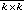
non-singular matrix. S, G and P are kept secret by Alice. The SGP matrix
multiplication leads to a linear composition of each cleartext Boolean
equation of c. The difference with respect to the original McEliece scheme
is that the result of the encryption is interpreted as Boolean equations
defining the encrypted circuit.
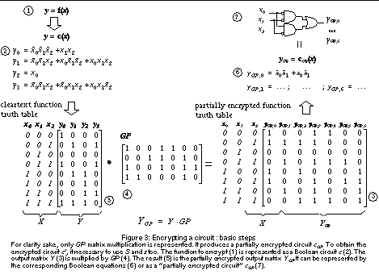
In addition to the SGP multiplication, algorithm EA introduces errors in the circuit in order to detect integrity attacks and prevent confidentiality attacks as explained below. As error-correcting codes, Goppa codes allow to efficiently remove these errors at decoding time. Errors introduced by EA can be viewed as an error circuit that, given an l-bit argument, returns an n-bit string with a Hamming weight of t that is computationally indistinguishable from a random n-bit vector with the same weight. Such a function, called z, computationally indistinguishable from the set of functions satisfying the weight restriction exists. [31] proposes an efficient construction for functions that output words of a given weight. Encrypted Circuit Evaluation and VerificationOnce c' is created, the protocol between Alice and Bob
is the following:
and gets the result 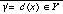 . There is an increase in the number of Boolean outputs while the number of inputs is kept unchanged. The result 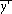 is then sent to Alice.
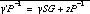 . Permuting individual error contributions does not change the Hamming weight of the vector and thus, 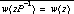 . The vector z is a correctable error vector since it is defined as: 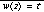 exactly. The decoding algorithm for the code generated by G can correct an error with a weight of at most t, thus Alice is able to retrieve the cleartext result 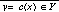 and the error vector z from zP-1.
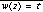 , the output is accepted, tampering with the evaluation of c' is assumed otherwise. For integrity verification, the error weight is fixed. The maximum error weight that can be corrected using Goppa codes is t. 2.3 Scheme evaluationConfidentiality of ExecutionConfidentiality of execution relies on the hardness of
retrieving the equations of the circuit c after their multiplication with
matrix SGP and after adding the error z. First of all, an enumeration attack
to recover the circuit c directly from c' is unfeasible using the code
size proposed by McEliece ( [n=1024, k=524, t=50] ). Moreover this attacker
requires the public key that is not even available to him here.
Retrieving the error circuit z from circuit is another possible attack. It is equivalent to trying to retrieving a subspace from a set of codewords with errors. In another context, this problem was termed Decision Rank Reduction [38] and was proven to be NP-complete. In order to avoid this attack our solution is based on errors with a Hamming weight equal to the maximum correction capability of the code. Nonetheless, transformation EA does not hide everything about circuit c. Bob can identify inputs 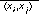 that have the same cleartext output 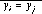 because the distance 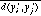 between the ciphertext values will be small so that errors remain correctable. In that case, 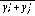 = 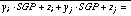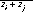 (mod 2). An attacker would be able to recognize such values because the Hamming weight of their sum is at most equal to 2t even though he does not know the result cleartext value yi. Differential cryptanalyse exploiting the fact that the error circuit z does not completely hide the linearity of the transformation were described in [13] and [7]. These attacks only apply when the public key is available but this one is kept secret in our scheme. Moreover, the identification of ciphertexts corresponding to the same cleartext can be suppressed [35] but implies an increase in the computational complexity of the encryption, decryption, and verification algorithms. The majority voting attack described in [30], [39] exploits the non-deterministic nature of the cryptosystem to recover the secret code. The probability of success of this attack depends on getting a high number of different ciphertexts for each plaintext. This is not possible in our scheme that keeps secret the public key. Integrity of executionLet us establish the probability that the verifier accept
an invalid y'. The set of acceptable cleartext outputs is 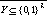
. Due to the definition of the error function, it is assumed that it is
hard to establish any link between the inputs to the error function and
the error patterns. Thus, picking a random encrypted output value 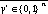has
a probability of being accepted.
A's result y can only be valid if its value is an element of 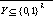
. The probability of a successful attack can be calculated as "the probability
of choosing an y existing in Y" times "the probability of generating a
correct error weight". Generating a correct error means finding a t bit
vector chosen at random among n bits. The worst case (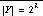
) leads to a probability of a successful attack of: 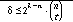
. For a Goppa code [n=1024, k=524, t=101], the probability of a successful
attack is: 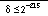
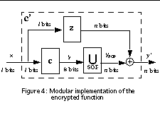
Circuit Size EvaluationThe circuit c' being evaluated by a remote host, it is
important to minimize the impact of encryption on the circuit size, measured
by its number of logical gates. Expansion rate cannot be calculated because
it is specific to the structure of the original circuit. However, it is
possible to study the worst case. The encrypted function can be implemented
by a modular circuit c' as shown in Figure 4.
In practice, the encrypted function is implemented by a circuit based on simplified equations, the size of this circuit being necessarily smaller than that of the equivalent modular circuit shown in Figure 4. The circuit based on simplified equations offers the same functionality as the three different modules of Figure 4. Integrity and confidentiality properties of the protection scheme do not allow an attacker to retrieve the modular circuit from the equations. The size of the actual encrypted circuit is smaller than the sum of the sizes of the three modules: Sizec' 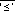 SizeSGP + Sizez + SizeXOR + Sizec The matrix SGP multiplication transforms the k cleartext circuit outputs yi into n encoded outputs that are noted ySGP,j : for instance, ySGP,0 = 1.y1 + (0.y2) + 1.y3 + (0.y4)+ 1.y5 , and so on. For a given fixed number of inputs and outputs, the size of the SGP-encoding circuit (SizeSGP) is fixed (proportional to ) and the size of the error circuit (Sizez) can be chosen. Both are independent of the original circuit size (Sizec) and thus Sizec' 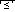 Sizec + 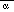 . When the circuit is simple (e.g. y = NOT(x) or y=2x), then Sizec <<  and encrypting a circuit increases significantly the circuit size. However,
when the circuit is large compared with the sizes of equivalent circuits
for SGP multiplication and error, then Sizec >
and encrypting the circuit has a negligible effect on the circuit size
increase: Sizec' Sizec (the size
of the XOR function being negligible).
and encrypting a circuit increases significantly the circuit size. However,
when the circuit is large compared with the sizes of equivalent circuits
for SGP multiplication and error, then Sizec >
and encrypting the circuit has a negligible effect on the circuit size
increase: Sizec' Sizec (the size
of the XOR function being negligible).3 Protecting Functions within a Program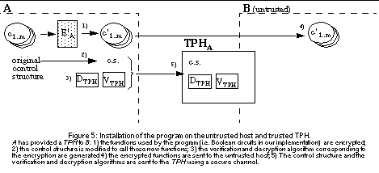As explained in the previous section, function protection only allows the execution of one function while a program has to perform several functions in sequence. A naïve approach is to represent a program as a single Boolean circuit and protect this one using the function protection scheme described above. Unfortunately, this approach, which requires huge circuits, is totally unrealistic. We propose a solution to the problem of software protection that consists in delegating the verification and decryption tasks (originally performed by the circuit owner A) to a trusted tamper-proof hardware (TPH) located at the untrusted site (a preliminary proposal was described in [26]). This TPH must be directly accessible by the untrusted host in order to suppress all interactions with the code owner (A) when the software is executed. The suggested solution assures the security of the circuits executed on an untrusted runtime environment. It also makes it possible to securely perform multi-step evaluation of functions. Additionally, this scheme enables a program to deliver a cleartext result to the untrusted host without having to contact the code owner. Assuming a wide deployment of mobile codes makes it unlikely that expensive tamper-proof hardware be used: this implies that the TPH will be limited in terms of storage and computational capacity. Even though our solution for multi-step execution is based on the protection technique described in the Section 2, it has to be adapted to cope with the computation power limitations imposed by the TPH (look at Section 3.2). The use of a TPH has already been suggested for delegating the functionality of a trusted party in specific contexts as can be seen in host-assisted secret key [8] or public key [17] cryptography applications. [6] proposes to separate a program into several pieces but does not deal with encrypted functions. 3.1 Computational ModelA program can be modeled as a set of functions plus a
control structure, which defines the sequencing of functions. As in the
previous section, functions are implemented with circuits. The computation
of each individual circuit ci depends on a set of inputs x received from
the host and from the memory of the TPH. As before, the protection of each
circuit from the untrusted environment where it is evaluated is achieved
through its encryption. The control structure is uploaded to the tamper-proof
hardware to protect it. Based on this control structure, the TPH instructs
the untrusted environment to execute one of the encrypted circuits ci'.
For each output of circuit ci', the TPH is able to verify the integrity
of the result and to retrieve the cleartext result y in an efficient way.
Each circuit ci is encoded with a new algorithm E'A.
A state of the computation can be maintained in the trusted TPH, in other words memory attacks need not be taken in consideration. It is mandatory that B receives a TPH trusted by A, which is not a very restrictive hypothesis. For instance, A could be a bank or an operator that provides a smart card to its client B, just like they already provide credit cards and SIM cards. A verification and decryption algorithm must be installed on the TPH via a secure channel, either before the TPH is distributed to clients or transmitted in encrypted form using a secret shared by A and her TPH. Once the encrypted circuits (c'1 ... c'm) are installed (Figure 5) on host B, the TPH is in charge of choosing which function has to be evaluated and of providing a part of the inputs (xTPH), the other part being provided by B (xB). After each step (i.e. each encrypted function evaluation), the TPH deciphers and verifies the returned result (Figure 6). Note that a given function can be evaluated more than once with different inputs. When the TPH chooses the next encrypted function to execute (ci+n), it provides input data (xTPH, i+n). Those data are stored on the TPH.
3.2 Protection SchemeThe algorithms devised in the protection scheme of Section
2 have to be adapted to the new scenario in which the TPH has less computational
power than the party that it represents. The algorithm used for function
encryption remains the same since this operation is performed by the code
owner, but the error computation is modified in order to simplify the verification
performed by the TPH. The new verification and decryption algorithms are
respectively called VTPH and DTPH. In order to simplify the verification
and decryption, xB is transmitted to the TPH.
The integrity of execution relies on the difficulty of creating forged pairs 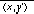 that pass the verification process (xTPH being known). Using the same terminology as in the previous section, this probability can be defined as follows: if 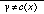 then 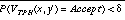
Error CircuitAs in the classical McEliece scheme, the function protection
scheme of Section 2 introduced at most (and in our case, exactly) t errors
into the encoded circuit: this represents the maximum number of correctable
errors using the capacity of the code, since in the scheme, A did not know
B's input x. This value is now retrieved on the TPH that also possesses
the error circuit z(x) and can entirely suppress the error without restraining
to a specific correction capacity. It is thus possible to introduce much
more weighted errors into the encrypted circuit.
The security parameter q, with 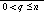 , indicates the maximum weight of the error introduced. Using a Goppa code [n=1024, k=524, t=101], this parameter might be as high as 1024 bits, meaning that all bits of a given output y' might be in error, instead of t=101 bits as in the scheme of Section 2. In the general case, the number of errors introduced will be smaller than this upper bound, yet higher than the correctable case. This considerably limits enumeration attacks for retrieving the error circuit. Nonetheless, the error circuit size must remain reasonable to retain any advantage from executing c' on the untrusted host rather than c on the TPH. For the construction of the error circuit, a trade-off should be found between the highest possible number n of simple error equations and a smaller number of more complex equations closer to a random error. Result DecryptionIn the new scheme, the decipherment is based on the inputs
and outputs of the encrypted function evaluation. For each evaluation of
circuit c', the TPH, which knows xTPH, receives y' and xB. The encrypted
result can be written: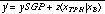 . S, G, and
P being known to the TPH, as well as the error circuit z(x), it is possible
to first compute and remove the error pattern:
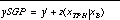 Since matrix G is in systematic form (I | A), the GP encoding can be removed as follows: 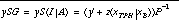 (eq 1) 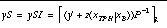 (eq 2) where 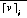 is the vector formed by the first i bits of vector v. The cleartext output y can finally be retrieved as follows:
 Integrity VerificationThe verification algorithm is adapted to the new construction
of the error circuit. Integrity of execution is ensured by controlling
that all bits of the cleartext output are correct after having removed
the supposed error pattern. Since the cleartext output y can be obtained
by using only the first k bits of ySG, the remaining and redundant n-k
bits are used to verify that the output computed by the untrusted host
has not been tampered with.
From decryption equation 1 (above), and using only the last n-k bits of ySG : where is the vector formed by the last i bits of vector v. Since ySA = (yS)A, it can be deduced from decryption equation 2 that the TPH needs only verify that the following equation is satisfied: 3.3 Scheme EvaluationConfidentiality of ExecutionEvaluating the confidentiality relies on the same principles
as in the previous section. Since it is now possible to introduce more
weighted errors, the complexity of retrieving the initial circuit is increased
in a ratio depending upon the chosen security parameter q.
A new problem is introduced by the multi-step execution concerning intermediate cleartext results. It sometimes happens that xTPH, i = DTPH(yi-n'), that is, B can observe the cleartext result of a previously computed function. The fact that the cleartext result may be given back to the untrusted environment is critical. With a sufficient number of pairs of cleartext inputs and outputs, the untrusted host would be able to interpolate circuit c. For more details, refer to the limitations section below. Integrity of ExecutionAn enumeration attack amounts to obtaining a forged pair
(x, y') acceptable for the verifier. Since the TPH can get access to the
input in addition to the encrypted output of circuit evaluation, the verification
is now performed using the actual error pattern and not the error weight
as before. The probability of such an attack being successful is thus even
smaller than in the scheme of Section 2. Like for confidentiality, the
use of more weighted errors can even further increase the difficulty of
breaking the integrity of execution.
Moreover, part of the input is provided by the TPH and cannot be modified by the untrusted host: this makes it possible to obtain the equivalent of a variable error pattern for the inputs restricted to xB, the untrusted host inputs. In other words, even if the untrusted host B is able to determine the error pattern for a given xTPH, this pattern will not be useful for another value of xTPH. In practice, xTPH will vary for nearly each computation of a given function throughout the lifetime of a program. LimitationsAs to the limitations of this approach, it is obvious
that the algorithmic structure of the protected program is not hidden:
the repeated execution of a function can be traced. Private Information
Retrieval techniques (PIR) [15]
and oblivious RAM models [20]
that hide the sequence of accesses provide a sophisticated solution to
this problem. Unfortunately, those works have shown that hiding access
patterns is prohibitively expensive. This is the reason why our scheme
addresses the protection of each function used by a program rather than
the protection of its algorithmic structure.
The result of some encrypted function fi can be used as the input to another function fj. This means that a malicious host can sometimes observe the cleartext result of one of the encrypted functions that form the building blocks of a program. Depending on the function and on the number of times it is evaluated, it might be possible to obtain enough cleartext inputs and outputs to interpolate the function. In order to avoid this problem a scheme using enciphered inputs and outputs could be used but the performance penalty is important. However, even if the confidentiality of execution is partly broken, the integrity is not attacked. Indeed, interpolating a function allows an attacker to compute all corresponding cleartext outputs y, but knowing y and y' is already not sufficient to break the McEliece cryptosystem. ImplementabilityAny function with fixed-length inputs and outputs can
be represented as a Boolean circuit and thus encrypted by our scheme. However,
to have an efficient implementation, it is necessary to define a computation
model fitting the requirement of this approach. The TPH and the untrusted
host have to support two different computing models:
4 Related WorkThis section presents other work related to the confidentiality
or the integrity of execution. We also compare our solution with two other
approaches, truth table encryption and gate-level encryption, that can
be used to protect functions represented as Boolean circuits.
4.1 Confidentiality of ExecutionSecure function evaluation is an instance of the more
general problem of confidentiality of execution. Secure function evaluation
has been addressed by many researchers ([41],
[42],
[19],
[3],
and [2], just to
mention a few). Non-interactivity is an important requirement for mobile
code, but the protocols addressing the circuit model need a round complexity
dependent on the number of gates or depth of the circuit and are thus not
well adapted to mobile code.
Sander and Tschudin [33], [32] defined what they called a function hiding scheme and focused on non-interactive protocols. In their framework, the privacy of f is assured by a encrypting transformation. The authors illustrated the concept with a method that allows computing with encrypted polynomials, based on the Goldwasser-Micali encryption scheme [18]. Sander and Tschudin took advantage of the homomorphic properties of the above encryption scheme to encrypt the coefficients of the polynomial, thus their technique does not hide the skeleton of the polynomial. Moreover, polynomials are not as expressive as Boolean circuits. [36] presented a non-interactive solution for secure evaluation of circuits but which is restricted to log depth circuits (or NC1 circuits). Protocols were designed for processing NOT and OR gates in a private way. The restriction on the depth of the circuit comes from the increase of the output size by a constant factor when computing an OR gate. In [14] and [1], more efficient techniques are presented, that combine encrypted circuits [42] and one round oblivious transfers. However, the circuit expansion is high with this technique and this expansion compromises the narrow advantage in performance of mobile code as shown in [22]. 4.2 Integrity of ExecutionIntegrity of execution is the possibility for the circuit
owner to verify the correctness of the execution of his circuit. This problem
has been extensively studied for achieving reliability (see for example
[12]
for a survey) but security requirements taking into account possible malicious
behavior from the execution environment were not considered.
Other solutions cope with the maliciousness of the execution environment. Yee [44] suggested the use of proof based techniques, in which the untrusted host has to forward a proof of the correctness of the execution together with the result. Complexity theory shows how to build proofs for NP-languages and recently how to build Probabilistic Checkable Proofs (PCP) [4], [5]. PCP proofs require checking only a subset of the proof in order to assure the correctness of a statement. However, this subset has to be randomly determined by the checker, so the problem of using PCP proofs in our non-interactive scenario is that the prover has to commit to the overall PCP proof. We refer the interested reader to [21] for a comprehensive survey of the work on proofs. In [11], the authors presented an interesting model for mobile computing and a solution that overcomes the problem of using PCP proofs. The agent is modeled as a probabilistic Turing machine, and the set of all possible states of this machine constitutes a NP language. There exists a verification process for language membership, that is, it is possible to check if an obtained state belongs to the language. This scheme relies on the use of non-interactive Private Information Retrieval techniques to avoid the transmission of the overall PCP proof of the specified language, the randomly chosen queries from the checker being encrypted. Our second scheme allows us to "trace" in real-time an execution step-by-step, one step being a function evaluation, and ensuring that each step is performed in accordance with the program semantics. In our scheme, verifying an execution does not require verifying a complex trace. 4.3Encrypted Boolean Circuit ApproachesBoolean circuits can be protected from confidentiality
and integrity attacks using three different encryption techniques: circuit
encryption (our approach from Section 2), truth table encryption, and gate-level
encryption [36],
[19].
Circuit Encryption vs. Truth Table EncryptionEvaluating a function with a truth table simply corresponds
to choosing the right line of the table that corresponds to the inputs
and contains the outputs of a circuit. A simple protection of this scheme
is to encrypt line-by-line each output of the truth table with a standard
encryption algorithm. A new truth table with encrypted outputs is then
obtained. In this approach, each result is pre-calculated.
The truth table outputs being encrypted line by line, the encrypted function it represents is by definition constructed randomly. Shannon showed that the size of almost every function with l inputs and one output is bigger than 2l/l. The size of the circuit implementing an encrypted truth table with n outputs can thus be assumed to be bigger than n 2l/l gates. This size does not depend on the initial cleartext circuit but essentially on the number of inputs and can be bounded: any function with l inputs and one output can be computed by a circuit of size O(l 2l) [40]. Our scheme modifies Boolean equations rather than outputs and, as shown in Section 2.3, Sizec' = Sizec + . It is possible to have Sizec' Sizec under reasonable assumptions about the size of c compared with the size of the error circuit or the SGP multiplication circuit (in a modular implementation). In the worst case, when the cleartext circuit size Sizec is close to l 2l, the size Sizec' of the resulting encrypted circuit is not better than the size of an equivalent encrypted truth table. Circuit Encryption vs. Gate Level EncryptionThe gate-level encryption[36],
[19]
is a Computing with Encrypted Data scheme. Each gate of the circuit is
replaced by a cryptographic module that use keys as inputs and outputs
to represent true or false Boolean values. A function evaluation corresponds
to cryptographic operations performed gate by gate. However, it is possible
to observe the resulting construction and to deduce the initial circuit.
This solution thus does not ensure confidentiality but only integrity.
Valiant's universal circuit [37]
makes it possible to see circuits as data. Thanks to it, it is possible
to convert the Computing with Encrypted Data scheme into Computing with
Encrypted Functions.
The main advantage of the gate-level encryption scheme is the linear impact of the encryption on the circuit size. Indeed, each gate of the initial circuit is replaced by one module and associated keys. When the universal circuit is used, the resulting size is O(d s  log(s)) modules, where s is the size
of the initial circuit and d its depth. This size increase is small and
only depends on the initial circuit. log(s)) modules, where s is the size
of the initial circuit and d its depth. This size increase is small and
only depends on the initial circuit.This approach has drawbacks: it is necessary either to interact with the circuit owner for each gate evaluation or to use oblivious transfers to provide inputs. Moreover, the scheme allows only one evaluation of the circuit otherwise the integrity, and confidentiality in case of use of a universal circuit, cannot be ensured. In comparison, our approach is similar to the truth table in that it is an encryption of the whole output that is performed instead of a bit-by-bit encryption of the output. This makes it possible to evaluate a function more than once. Bit-by-bit encryption yields too much information about the circuit structure to permit two consecutive evaluations: a new encrypted circuit has to be recomputed after each evaluation. 5 ConclusionThis paper presented basic building blocks for securing
mobile code executed in a potentially hostile environment. It first described
a scheme that can autonomously evaluate a Boolean circuit in a potentially
malicious environment. This scheme ensures at the same time the integrity
and confidentiality of evaluation of the circuit. The protection is derived
from the McEliece data encryption scheme, thus allowing an efficient encryption,
verification and decryption. The original circuit is encrypted into a new
circuit, which can be executed by an untrusted environment although its
result can only be decrypted by the circuit owner. This scheme can generate
an encrypted circuit with a size close to that of the original circuit.
All functions implementable with Boolean circuits can be protected using
this scheme.
Any program can be implemented as a single circuit and thus be protected using this function protection scheme. In practice however, that approach is totally unrealistic because of the huge size of the circuit. The second part of this article introduces another protection scheme that deals with programs rather than functions. This scheme resorts to using a tamper-proof hardware, albeit with a limited capacity compared with the program processing needs. The tamper-proof hardware protects the scheduling of a set of encrypted functions executed directly in the untrusted environment. The tamper-proof hardware also performs the result decryption and verification, which were previously done by the code owner. The practical deployment of the latter scheme may finally be questioned because of the lingering requirement for a tamper-proof hardware. However, few years ago, authentication had similar needs and now such hardware is in wide use for authentication purposes. We envision the use of cheap tamper-resistant hardware like slightly modified smart cards as a possible solution. References1) J.
Algesheimer, C. Cachin, J. Camenisch, and G. Karjoth. Cryptographic security
for mobile code. In Proc. of the IEEE Symposium on Security and Privacy,
May 2001.
2) Martín
Abadi and Joan Feigenbaum. Secure circuit evaluation. Journal of Cryptology,
2(1):1-12, 1990.
3) Martín Abadi, Joan Feigenbaum, and Joe Kilian. On hiding information from an oracle. Journal of Computer and System Sciences, 39(1):21-50, August 1989. 4) Sanjeev
Arora, Carsten Lund, Rajeev Motwani, Madhu Sudan, and Mario Szegedy. Proof
verification and hardness of approximation problems. In Proc. 33rd IEEE
Foundations of Computer Science, pages 14-23, October 1991.
5) Sanjeev Arora and Shmuel Safra. Probabilistic checking of proofs: A new characterization of NP. Journal of the ACM, 45(1):70-122, 1998. 6) D. Aucsmith. Tamper resistant software: an implementation. In Proc. International Workshop on Information Hiding, 1996. Cambridge, UK. 7) Thomas A. Berson. Failure of the McEliece public-key cryptosystem under message-resend and related-message attack. In Burton S. Kaliski Jr., editor, Advances in Cryptology--CRYPTO '97, volume 1294 of Lecture Notes in Computer Science, pages 213-220. Springer-Verlag, 17-21 August 1997. 8) Matt Blaze, Joan Feigenbaum, and Moni Naor. A formal treatment of remotely keyed encryption. In Kaisa Nyberg, editor, Advances in Crytology - EUROCRYPT '98, Lecture Notes in Computer Science, pages 251-265, Finland, 1998. Springer-Verlag. 9) Manuel Blum and Sampath Kannan. Designing programs that check their work. In Proceedings of the Twenty First Annual ACM Symposium on Theory of Computing, pages 86-97, Seattle, Washington, 15-17 May 1989. 10) Matt Blaze. High-bandwidth encryption with low-bandwidth smartcards. In Dieter Grollman, editor, Fast Software Encryption: Third International Workshop, volume 1039 of Lecture Notes in Computer Science, pages 33-40, Cambridge, UK, 21-23 February 1996. Springer-Verlag. 11) Ingrid Biehl, Bernd Meyer, and Susanne Wetzel. Ensuring the integrity of agent-based computations by short proofs. In Kurt Rothermel and Fritz Hohl, editors, Proc. of the Second International Workshop, Mobile Agents 98, pages 183-194, 1998. Springer-Verlag Lecture Notes in Computer Science No. 1477. 12) Manuel Blum and Hal Wasserman. Software reliability via run-time result-checking. Journal of the ACM, 44(6):826-849, November 1997. 13) Anne Canteaut. Attaques de Cryptosystèmes à Mots de Poids Faible et Construction de Fonctions t-Résilientes. PhD thesis, Université Paris VI, October 1996. 14) C. Cachin, J. Camenisch, J. Kilian, and Joy Muller. One-round secure computation and secure autonomous mobile agents. In Proceedings of the 27th International Colloquium on Automata, Languages and Programming-ICALP 2000, Geneva, July 2000. 15) B. Chor, O. Goldreich, E. Kushilevitz and M. Sudan, Private information retrieval, Proceedings of 36th IEEE Conference on the Foundations of Computer Science (FOCS), p. 41--50, 1995. 16) C. Collberg, C. Thomborson and, D. Low, A taxonomy of obfuscating transformations, Technical Report 148, Department of Computer Science, University of Auckland, 1996. 17) Joan Feigenbaum. Locally random reductions in interactive complexity theory. DIMACS Series in Discrete Mathematics and Theoretical Computer Science, 13:73-98, 1993. 18) Shafi Goldwasser and Silvio Micali. Probabilistic encryption. Journal of Computer and System Sciences, 28(2):270-299, April 1984. 19) Oded Goldreich, Silvio Micali, and Avi Wigderson. How to play any mental game or a completeness theorem for protocols with honest majority. In Proceedings of the Nineteenth Annual ACM Symposium on Theory of Computing, pages 218-229, New York City, 25-27 May 1987. 20) Oded Goldreich and Rafail Ostrovsky. Software protection and simulation on oblivious RAMs. Journal of the ACM, 43(3):431-473, May 1996. 21) Oded Goldreich. Modern Cryptography, Probabilistic Proofs and Pseudorandomness. Springer-Verlag, 1999. 22) Daniel Hagimont and Leila Ismail. A performance evaluation of the mobile agent paradigm. In Proceedings of the Conference on Object-Oriented Programming, Systems, Languages and Applications, pages 306-313, Denver-USA, November 1999. 23) Sergio Loureiro and Refik Molva. Function hiding based on error correcting codes. In Manuel Blum and C. H. Lee, editors, Proceedings of Cryptec'99 - International Workshop on Cryptographic Techniques and Electronic Commerce, pages 92-98. City University of Hong-Kong, July 1999. 24) Sergio Loureiro and Refik Molva. Privacy for Mobile Code. In Proceedings of the Distributed Object Security Workshop - OOPSLA'99, pages 37-42, Denver, November 1999. 25) Sergio Loureiro, Refik Molva, and Yves Roudier. Mobile code security. In Proceedings of ISYPAR'2000, 4ème Ecole d'Informatique des Systèmes Parallèles et Répartis, Toulouse, France, February 2000. 26)Sergio Loureiro and Refik Molva. Mobile Code Protection with Smartcards. In 6th ECOOP Workshop on Mobile Object System. Cannes. France. June 2000. 27) R. J. McEliece. The theory of information and coding, Encyclopedia of Mathematics and its Applications, Vol. 3, Addison-Wesley, Reading, MA, 1977. 28) R. McEliece. A public-key cryptosystem based on algebraic coding theory. In Jet Propulsion Lab. DSN Progress Report, 1978. 29) Silvio Micali. CS Proofs (extended abstract). In IEEE Proceedings of Foundations on Computer Science, pages 436-453, 1994. 30) Joost Meijers and Johan van Tilburg. Extended majority voting and private-key algebraic-code encryptions. In Hideki Imai, Ronald L. Rivest, and Tsutomu Matsumoto, editors, Advances in Cryptology--ASIACRYPT '91, volume 739 of Lecture Notes in Computer Science, pages 288-298, Fujiyoshida, Japan, 11-14 November 1991. Springer-Verlag. Published 1993. 31) Nicolas Sendrier. Efficient generation of binary words of given weight. In Colin Boyd, editor, Cryptography and Coding; proceedings of the 5th IMA conference, number 1025 in Lecture Notes in Computer Science, pages 184-187. Springer-Verlag, 1995. 32) Tomas Sander and Christian Tschudin. On software protection via function hiding. In Proceedings of the Second Workshop on Information Hiding, Portland, Oregon, USA, April 1998. 33) Tomas Sander and Christian Tschudin. Towards mobile cryptography. In Proceeding of the 1998 IEEE Symposium on Security and Privacy, Oakland, California, May 1998. 34) Luis F. G. Sarmenta. Volunteer Computing. Ph.D. thesis. Dept. of Electrical Engineering and Computer Science, MIT, March 2001. 35) Hung-Min Sun. Improving the security of the McEliece public-key cryptosystem. In Proceedings of Asiacrypt 98, pages 200-213, 1998. 36) Tomas Sander, Adam Young, and Moti Yung. Non-interactive cryptocomputing for NC1. In Proceedings of the IEEE FOCS, October 1999. 37) Leslie G. Valiant. Universal circuits (preliminary report). In Conference Record of the Eighth Annual ACM Symposium on Theory of Computing, pages 196-203, Hershey, Pennsylvania, 3-5 May 1976. 38) A. Valembois. Recognition of binary linear codes as vector-subspaces. In Workshop on Coding and Cryptography'99, Book of abstracts, pages 43-51, Paris, France, January 1999. 39) Johan van Tilburg. Security-Analysis of a Class of Cryptosystems Based on Linear Error-Correcting Codes. PhD thesis, Technische Universiteit Eindhoven, 1994. 40) Ingo Wegener. The Complexity of Boolean Functions. Eiley-Teubner, 1987. 41) A.C. Yao. Protocols for secure computations. In IEEE Symposium on Foundations of Computer Science 82, pages 160-164, Chicago, 1982. 42) A.C. Yao. How to generate and exchange secrets. In IEEE Symposium on Foundations of Computer Science 86, pages 162-167, Toronto, 1986. 43) Bennet Yee. Using Secure Coprocessors. Technical Report CMU-CS-94-149. School of Computer Science, Carnegie Mellon University. May 1994. 44) Bennet Yee. A sanctuary for mobile agents. Technical Report CS97-537, UC at San Diego, Dept. of Computer Science and Engineering, April 1997. |
|
This paper was originally published in the
Proceedings of the Fifth Smart Card Research and Advanced Application Conference,
November 21–22, 2002, San Jose, CA, USA
Last changed: 11 Oct. 2002 aw |
|